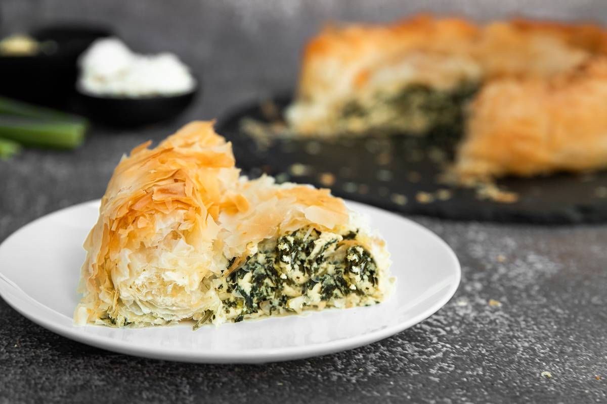

Byrek Me Spinaq
Home

Albanian Spinach Pie
This spinach pie is not like a traditional american pie, typically filled with sugary fruits. Albanian pie, or Byrek, uses filo dough as the base and can be filled with meat and/or vegetables, such as spinach or sourkrout.
Byrek me spinaq (spinach pie) is filled with spinach, cottage cheese, eggs, milk, and feta. The baked phyllo dough comes out flaky and works perfectly with the internal ingredients creating a delicious meal or snack.
Ingredients
- Phyllo shell we made previously
- 1 pound spinach
- 2 pounds cottage cheese
- 1/2 cup of crumbled feta cheese
- 5 eggs, beaten
- 1/4 cup milk
- 4 tablespoons butter, melted
- 1/2 teaspoon of salt
Steps
- Wash, drain, and cut up the spinach (remove stems)
- Steam spinach over very low heat until tender Then set aside to cool
- Combine cottage cheese, feta, eggs, milk, butter, and salt; blend well
- Stir in spinach
- Spread filling evenly into phyllo shell
- Refer back to the phyllo shell we prepped earlier for baking instructions
- Enjoy!